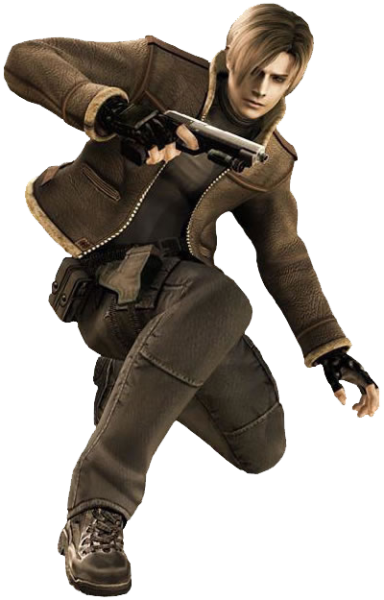

Rescue Mission
Ashley Graham , the U.S. President's daughter, who has been abducted by a mysterious cult.He travels to an unnamed rural village in Spain, where he encounters a group of hostile villagers who pledge their lives to Los Iluminados, the cult that kidnapped Ashley. The villagers were once simple farmers until becoming infected by a mind-controlling parasite known as Las Plagas